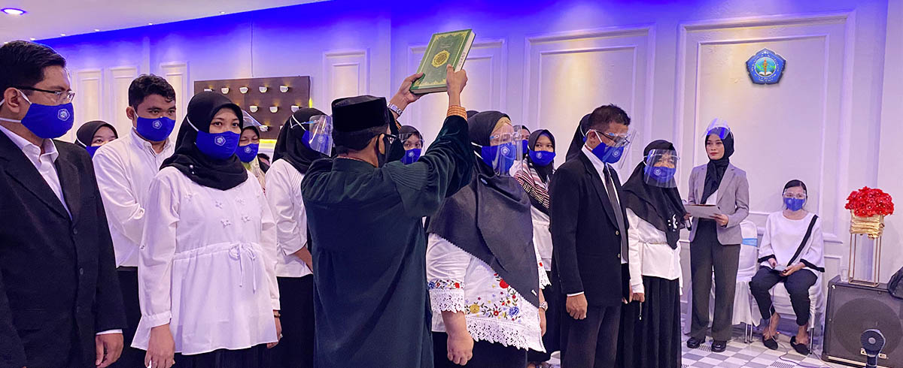

STIKES BAKTARA
STIKES BAKTARA
STIKES BAKTARA
STIKES BAKTARA


Pendidikan Nasional bertujuan mencerdaskan kehidupan bangsa dan mengembangkan manusia Indonesia seutuhnya melalui pembentukan manusia yang beriman dan bertakwa kepada Tuhan Yang Maha Esa serta berbudi pekerti luhur, memiliki pengetahuan dan keterampilan, sehat jasmani dan rohani, berkepribadian yang terpuji, percaya diri, mandiri, disiplin, jujur, mampu bekerja keras dan memiliki rasa tanggung jawab kebangsaan dan juga pada masyarakat. Sekolah Tinggi Ilmu Kesehatan Bakti Nusantara Gorontalo sebagai lembaga pendidikan ikut bertanggung jawab untuk mencerdaskan kehidupan bangsa melalui pendidikan dan melahirkan peserta didik, menjadi anggota masyarakat yang memiliki kemampuan, kecakapan, keterampilan dan mengemban/menyebarluaskan ilmu pengetahuan, teknologi dan seni di bidang Kesehatan, untuk meningkatkan derajat Kesehatan keluarga, masyarakat, bangsa dan Negara. Untuk melaksanakan peran pendidikan tersebut, Sekolah Tinggi Ilmu Kesehatan Bakti Nusantara Gorontalo memerlukan suatu landasan sebagai pedoman dasar guna merencanakan, menyelenggarakan kegiatan maupun mengembangkan program pendidikan serta rujukan pengembangan peraturan umum, peraturan akademik dan prosedur operasional yang berlaku. Dengan demikian, maka Statuta Sekolah Tinggi Ilmu Kesehatan Bakti Nusantara Gorontalo ini ditetapkan untuk menjadi pedoman pelaksanaan tugas dan tanggung jawab Sivitas Akademika.
Hukum kesehatan mewajibkan penyelenggara layanan kesehatan untuk menjaga integritas dan kerahasiaan rekam medis pasien, serta memberikan akses informasi medis hanya kepada pihak yang berwenang, sesuai dengan prinsip-prinsip hukum yang berlaku, demi melindungi hak-hak pasien.
Laboratorium canggih dan fasilitas medis lengkap untuk mendukung proses pembelajaran.
Di bawah bimbingan dosen-dosen dengan keahlian di bidangnya, Anda akan siap menghadapi tantangan medis masa depan.